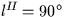
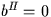

Velocity component in a given direction due to the rotation
of the Galaxy.
CALL:
R = sla_RVGALC (R2000, D2000)
GIVEN:
R2000,D2000
R
J2000.0 mean (radians)
RETURNED:
sla_RVGALC
R
Component of dynamical LSR motion in direction
R2000,D2000 (km s-1)
NOTES:
1.
Sign convention: the result is positive when the LSR
is receding from the given point on the sky.
2.
The Local Standard of Rest used here is a point in the
vicinity of the Sun which is in a circular orbit around
the Galactic centre. Sometimes called the dynamical LSR,
it is not to be confused with a kinematical LSR, which
is the mean standard of rest of star catalogues or stellar
populations.
3.
The dynamical LSR velocity due to Galactic rotation is assumed to
be 220 km s-1 towards , .